Stage 2.1: Download,
Verification and
installation of TOR Browser
Stage 2.1.1 Downloading TOR Browser
Step 1:
In your internet browser go to www.torproject.org/download/
Step 2:
Download the TOR Browser installer as well as the signature file below. Choose the file according to
your system. (Windows or Mac)
Stage 2.1.2 Verification and installation of TOR
Click here to open the Windows guide
On Windows
Step 1:
Open windows powershell.
In this step, we make sure that the files we downloaded are actually from the developer. It is a
bit
like verifying the origin of the food you eat.
Step 2:
If you went through our wallet set ups, you will have the program GPG4win installed. If not click
here and do Step 1-4.
In PowerShell, copy the following line:
gpg --auto-key-locate nodefault,wkd --locate-keys torbrowser@torproject.org
This should show you something like:
gpg: key 4E2C6E8793298290: public key "Tor Browser Developers (signing key)
<torbrowser@torproject.org>" imported
gpg: Total number processed: 1
gpg: imported: 1
EF6E286DDA85EA2A4BA7DE684E2C6E8793298290
uid [ unknown] Tor Browser Developers (signing key) <torbrowser@torproject.org>
NOTE: Your output may deviate somewhat from the above (eg. expiration dates), however you should
see
the key correctly imported.
If you get an error message, something has gone wrong and you cannot continue until you've
figured
out why this didn't work.
Step 3: Saving the fingerprint
After importing the key, you can save it to a file (identifying it by its fingerprint here):
gpg --output ./tor.keyring --export 0xEF6E286DDA85EA2A4BA7DE684E2C6E8793298290
This command results in the key being saved to a file found at the path ./tor.keyring, i.e. in
the
current directory. If ./tor.keyring doesn't exist after running this command, something has gone
wrong and you cannot continue until you've figured out why this didn't work.
Step 4:
To verify the signature of the package you downloaded, you will need to download the
corresponding
".asc" signature file as well as the installer file itself, and verify it with a command that
asks
GnuPG to verify the file that you downloaded.
The examples below assume that you downloaded these two files to your "Downloads" folder. Note
that
these commands use example file names and yours might be different: in that case you will need
to
replace the
example file names with exact names of the files you have downloaded.
gpgv --keyring .\tor.keyring Downloads\tor-browser-windows-x86_64-portable-14.5.4.exe.asc Downloads\tor-browser-windows-x86_64-portable-14.5.4.exe
The result should contain
gpgv: Good signature from "Tor Browser Developers (signing key) <torbrowser@torproject.org>
If you get error messages containing 'No such file or directory', either something went wrong
with
one of the previous steps, or you forgot that these commands use example file names and yours
will
be a little different.
If it worked out we can go on to the installation.
Step 5:
Now that we have verified the software is from the developer we can right click on it and press
"run
as administrator".
Click here to open the Mac guide
On macOS
Step 1:
Open the Terminal app. You can find it quickly by pressing ⌘ + Space, typing
"Terminal", and hitting Enter.
In this step, we make sure that the files we downloaded are actually from the developer. It’s a
bit like verifying the origin of the food you eat.
Step 2:
If you went through our wallet setups, you will already have GPG installed. If you haven't
click here
In Terminal, copy the following line:
gpg --locate-keys torbrowser@torproject.org
You should see output indicating the key was imported, for example:
gpg: key 4E2C6E8793298290: public key "Tor Browser Developers (signing key) <torbrowser@torproject.org>" imported
gpg: Total number processed: 1
gpg: imported: 1
Step 3: Save the key to a file
Find the fingerprint of the key you just imported:
gpg --fingerprint torbrowser@torproject.org
It will look something like:
EF6E286DDA85EA2A4BA7DE684E2C6E8793298290
Use this fingerprint to export the key to a file:
gpg --output ~/Downloads/tor.keyring --export 0xEF6E286DDA85EA2A4BA7DE684E2C6E8793298290
This creates tor.keyring in your Downloads folder.
This command saves the key as tor.keyring inside your Downloads folder. If
the file doesn't appear there, something went wrong and you must fix it before continuing.
Step 4:
Go to Tor Browser
Download Page and download both the Tor Browser .dmg
file and its corresponding .asc
signature file to your Downloads folder.
Once they are downloaded run this in terminal:
gpgv --keyring ~/Downloads/tor.keyring ~/Downloads/TorBrowser-14.5.4-osx64.dmg.asc ~/Downloads/NAMEOFYOURFILE.dmg
The output should contain:
gpgv: Good signature from "Tor Browser Developers (signing key) <torbrowser@torproject.org>"
If you see errors like “No such file or directory”, make sure the filenames match exactly what
you downloaded.
If everything worked, we can continue to installation.
Step 5:
Now that the software is verified, go to your Downloads folder and double-click the
.dmg file. Drag Tor Browser into your Applications folder to install it.
Stage 2.2: Installation of WoS
(Wallet of Satoshi)
Step 1: Go to your play store navigate to Wallet of Satoshi and click install
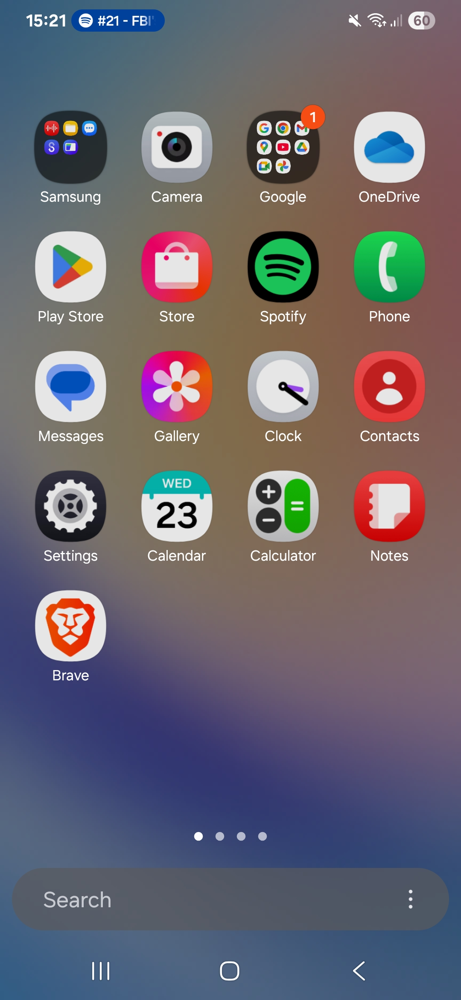
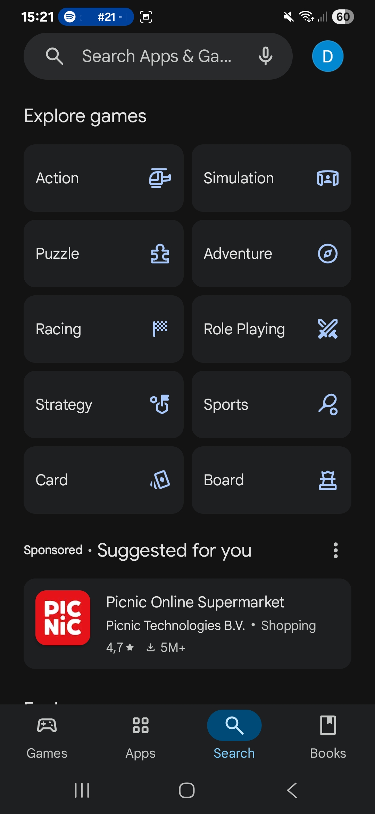
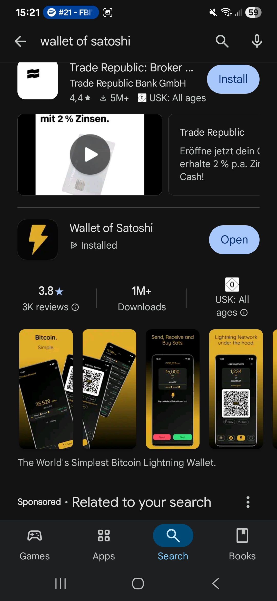
Stage 2.3: Installation of Phoenix Wallet
If you've done the courses in order your Phoenix Wallet should be set up already. If you haven't
click here to get to the guide.
Stage 2.4: Funding your wallets
To purchase Bitcoin on a peer to peer exchange such as RoboSats, which we will be using in this
guide, you need to have some Bitcoin in your wallet to begin with. This is to deposit a fraction of
the
trades amount. This is to protect both parties with an escrow
system, in which both parties place a deposit which is there to be paid out to one party in case
the other tries to break the agreement and steal funds.
Here are ways to acquire the funding Bitcoin for your wallet.
- Use a centralized exchange for your very first sats.
Buy Bitcoin on Kraken, Bitstamp, Coinbase, or another reputable exchange. Withdraw to your
Phoenix on-chain address — no RoboSats needed for this step.
- Use a Bitcoin ATM.
Insert cash, scan your Phoenix on-chain QR code, and get Bitcoin sent directly to your
wallet. No prior Bitcoin required.
- Buy peer-to-peer without RoboSats.
Find a local Bitcoiner via trusted community groups, Bitcoin meetups, or friends. Pay cash or do
a bank transfer — they send Bitcoin to your Phoenix wallet.
- Earn Bitcoin.
Sell a small service or product (art, digital work, tutoring) to someone who can pay you in
Bitcoin. They send to your Phoenix address.
Best practice is to avoid centralized exchanges unless there is no other way.
Step 1:
Access Phoenix Wallet and press the receive button
Step 2:
Send or have Bitcoin sent to the on chain address of your wallet or the lightning address if
you have access to lightning
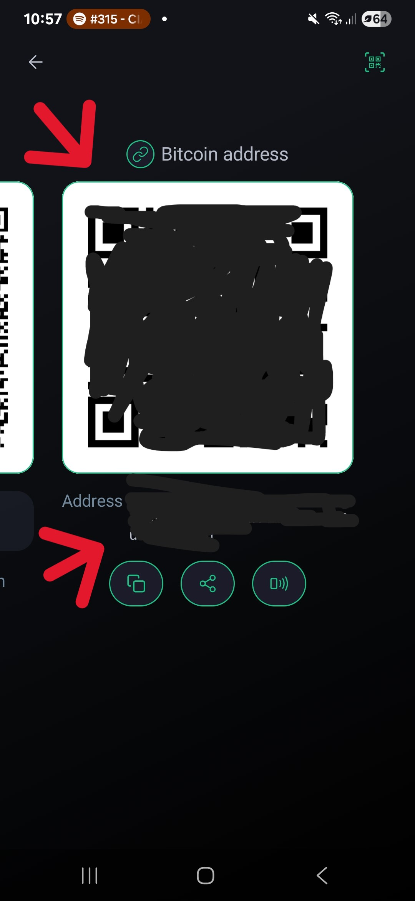
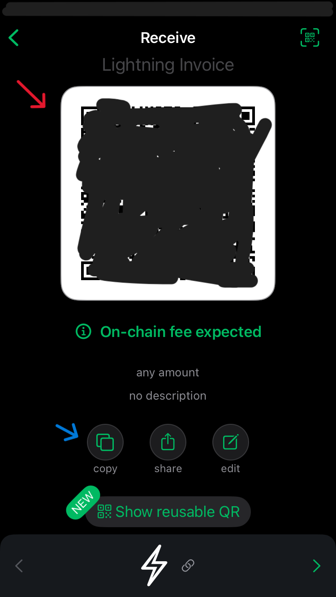
Usual bond amount for trades is between 2%-15%. Anything more than 40€ will be enough, however we
recommend funding with 50-100€ (current date 23.07.2025).
You should also take into consideration the amount of BTC you plan on buying and fund your wallet
accordingly. If you plan on buying 0.1BTC which is 10.000.000 sats you will need this amount of
inbound liquidity, meaning a lightning network channel with the capacity to receive 10.000.000 sats.
You can always buy inbound liquidity in Phoenix wallet at a low fee rate.
When you send normal (on-chain) Bitcoin to your Phoenix address, it automatically turns it into
Lightning by opening a channel for you. This lets you pay and receive instantly. Your phone is also
your own lightning node. Channel management happens in the background without work or influence on
your part.
Phoenix Wallet is now funded.
Step 3: Requesting Liquidity in Phoenix Wallet
To be able to receive a lightning payment the channel used needs liquidity. For this we need to move
Bitcoin that are on chain, meaning on the baselayer network, to
the second layer which is the lightning network. For this transfer a transaction fee is required.
In Phoenix wallet go to "Request Liquidity" and choose roughly the amount you will buy. Do not get
less liquidity than Satoshis you plan on receiving. This would cause the payment to fail.
For example: If you want to buy 99000 Satoshis, get 100000 sats liquidity.
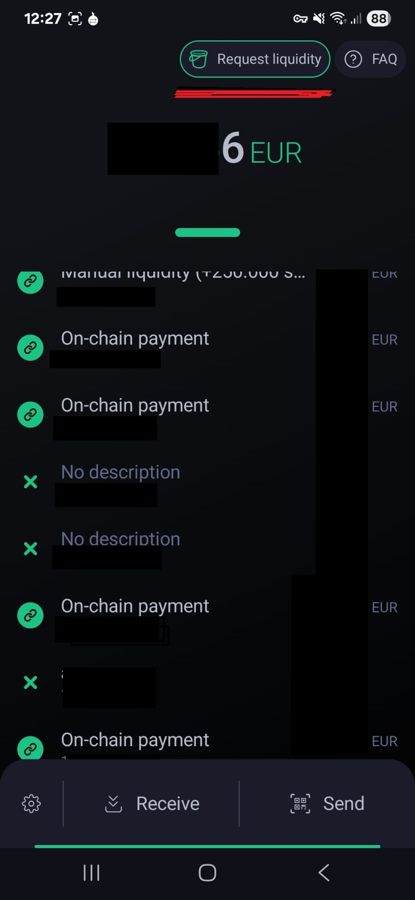
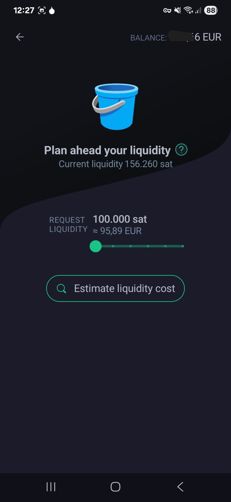
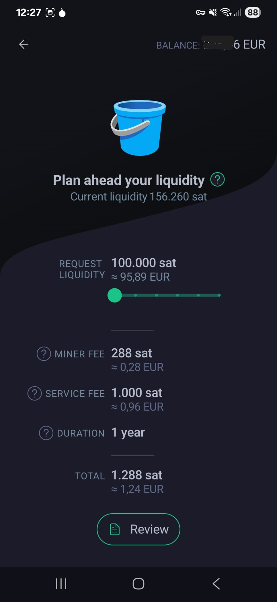
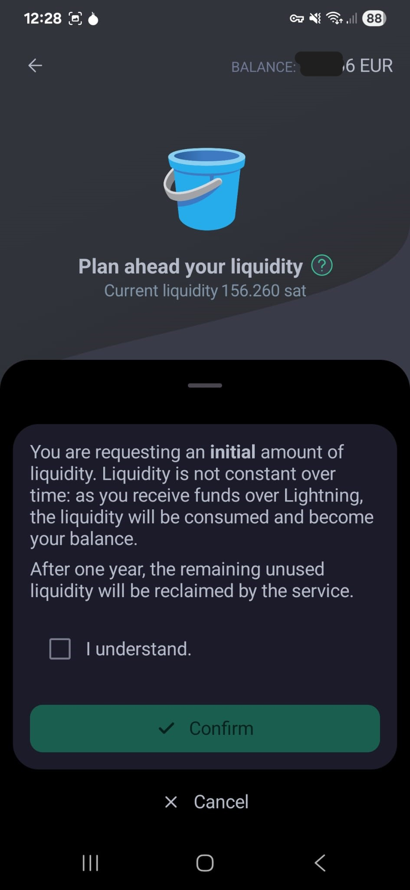
Step 4: Funding WoS (Wallet of Satoshi)
Now we need to add a small amount of Bitcoin to the wallet, this will be to pay a fee later
on when using Robosats
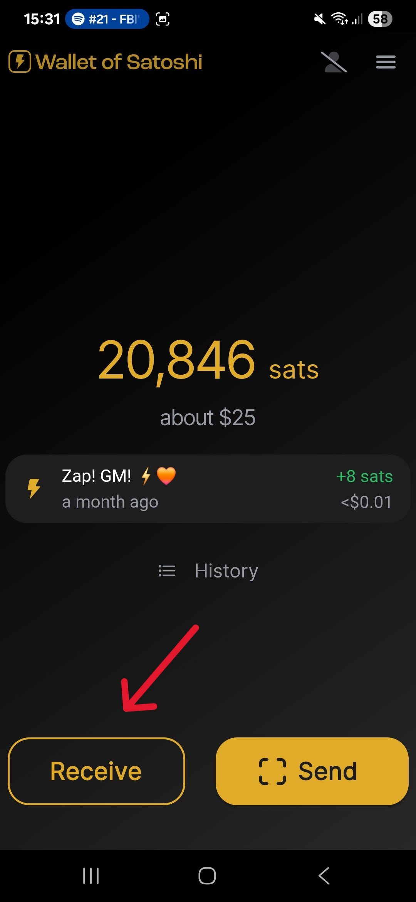
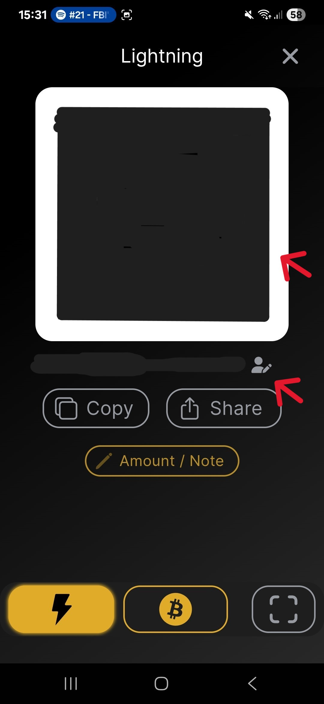
Tap the "receive" button. Then use either the QR code or the written address to send BTC to the
wallet. Add around 20.000 sats. (amount may vary depending on how much you plan on purchasing and
market situation. Current date 2025)
Stage 3: Your first Bitcoin purchase
Stage 3.1: Accessing RoboSats via TOR Browser
Step 1:
Open TOR Browser and press the connect button
At this point you can also access this website in Tor Browser for maximum privacy and simply clicking
links instead of copying them over between browsers.
Step 2:
Go to https://robosats.org/docs/access/
Step 3:
Click on the Onion address as displayed here
You have now accessed RoboSats.
Stage 3.2: Generating a trade identity
Step 1:
Click on the Start Button
Step 2:
Click the "generate Token" button
Step 3:
Follow the on screen instructions, make sure to save the generated key somewhere safe until
the trade is over and you have received your Bitcoin.
You now have an identity for the trade. Think of it like an avatar in a game.
Stage 3.3: Choosing a trade offer and purchasing
Bitcoin
Step 4:
Go to the "Offers" tab.
Step 5:
Choose to "buy"
Step 6:
Choose which currency you want to use.
At this point you should make sure that your online banking supports instant SEPA transfers if you
choose bank transfer. Also make sure you enable international payments. Either enable all countries
or
to the specific country of your trade partners bank, which you will see later in the trade.
If the trade fails a small fee can occur.
Step 7:
Look at the trade offers and choose one that is an amount you'd like to purchase and click
on it
Now you will see the following tab
Step 8:
Enter the amount you want to purchase and click "take order"
Step 9:
Using WoS (Wallet of Satoshi) you will now send a small amount of Sats as a deposit to be
frozen for the duration of the trade.
In WoS go to "send". You can either scan the QR code with your phone on which you use Wallet of
Satoshi, or you can copy
to clipboard and input the invoice that way.
Step 10:
Using Phoenix Wallet we will now create a lightning invoice for the exact amount of the
trade. Meaning the exact number of Sats shown on the trade.
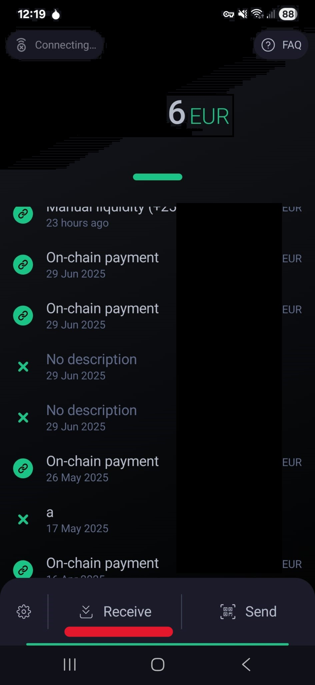
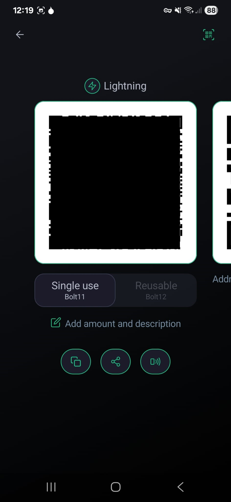
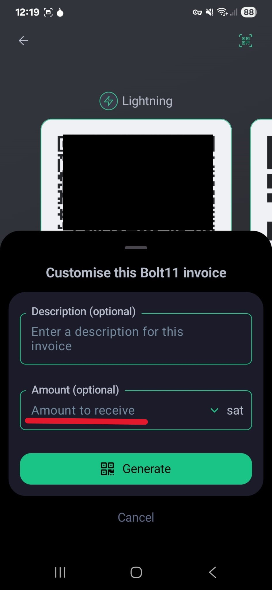
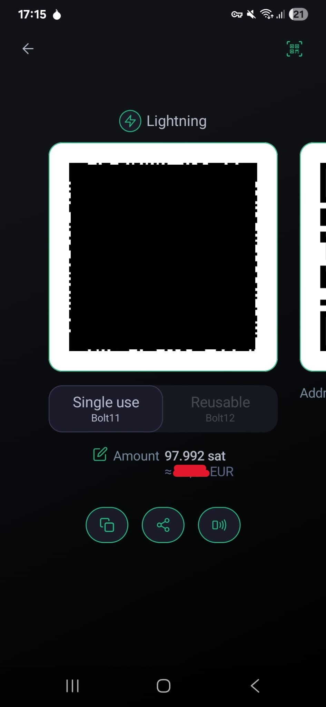
Step 11:
If the trade happens RoboSats will open a chat between the two trading parties
You will also receive the banking information where you will send the money in exchange for the
Bitcoin and potentially the trader will ask you to enter a payment reference so they can easily
match
the trade to the banking transaction.
Here they will also give you additional information on their requirements. You do not have to comply,
so if something unreasonable is asked for, do not go through with the trade. Things like not putting
a reference are fine.
Step 12:
Once you sent the money, let the other party know by pressing the button. You can additionally tell
them via chat.
Step 13:
Wait till you receive your Bitcoin in Phoenix Wallet.
Step 14:
Unless you plan on using the BTC on your hot wallet, best practice is to move it to cold
storage. You can either do that now or after completing a few other trades.
Sending larger amounts at once will save on transaction fees.